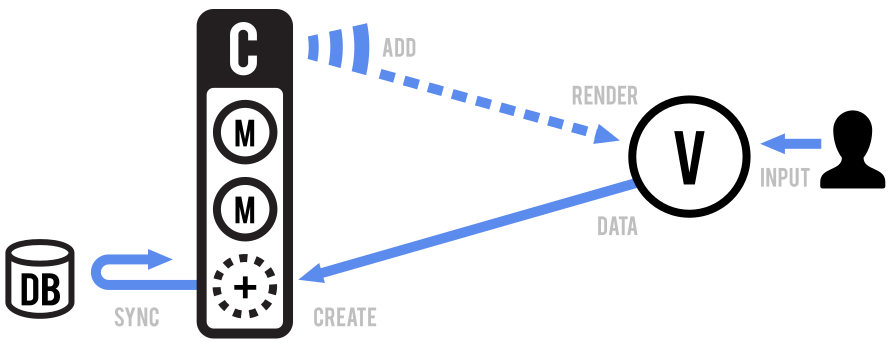

Backbone.js为Web应用提供了组织结构，它提供了键值绑定的模型，自定义事件，拥有丰富的可枚举函数API的集合， 带有声明式事件处理的视图，并且它通过一个RESTful的JSON接口与你所有已存在的API相互连接起来。
本项目托管在GitHub上，有一份带有注释的源码，一份线上的测试套件，一个示例应用，以及一个使用Backbone的真实项目的列表。遵循 MIT软件许可证的情况下就可以使用Backbone。
你可以在GitHub issues page上，在Freenode IRC的#documentcloud上，报告bugs和讨论新功能，在Google Group上提交问题，在wiki上添加页面，或者在@documentcloud上发tweets。
Backbone是DocumentCloud的开源组件。
下载 & 依赖 (右键,使用“另存为”)
| 开发版本 (1.3.3) | 72kb, 全部源码，大量的注释 |
| 生产版本 (1.3.3) |
7.6kb, 打包和gzipped压缩后 (Source Map) |
| Edge Version (master) |
未发布, 使用风险自负

|
Backbone仅严重依赖 Underscore.js ( >= 1.8.3)。为了进行RESTful数据持久化和在Backbone.View中操作DOM，需要包含jQuery ( >= 1.11.0)，为了支持老版本IE还要包含json2.js。（Underscore和jQuery的类似品，如Lodash 和 Zepto，在不同的兼容度下也可以工作）
入门指南
当工作在一个包含了许多JavaScript的web应用中时，第一件你需要学习的事是停止将你的数据绑定到DOM上。在JavaScript应用中你最终很容易创建许多缠绕在一起的jQuery选择器和回调，并且慌慌张张的尝试在HTML UI，JavaScript逻辑以及服务器端的数据库之间同步数据。对于富客户端应用来说，一个更加结构化的方法通常会比较有用。
使用Backbone，你用Models代表你的数据，可以对模型执行创建，校验，销毁以及保存到服务器等操作。无论何时一个界面的action引起模型的属性变更，它都会触发一个“change”事件；所有的展示这个模型状态的Views都会收到变更通知，以便做出反应，根据新的信息重新渲染自己。在一个完整的Backbone应用中，你不必去写胶水代码来查询DOM，找到一个带有特殊id的元素，然后手工更新HTML — 当模型变更后，视图只要简单的更新它们自己即可。
哲学上，Backbone尝试找到一组数据结构（模型和集合）以及基本的用户界面（视图和URLs）的最小集合，它们是构建JavaScript应用通常所需的。在一个无所不包的生态系统中，帮你决定好一切的框架是陈腐的，许多库要求你的网站按照它们的外观，感觉以及默认的行为来进行组织 - Backbone是一个工具，让你随心所欲地设计你web应用的整体体验。
如果你是新手，不是很确定Backbone到底可以用在什么地方，请先浏览这个基于Backbone的项目列表。
文档中的许多代码示例是可以运行的，因为这个页面包含了Backbone。
模型和视图

Backbone可以帮助你的一个最重要的事，是将你的业务逻辑与你的用户界面分离。当这二者纠缠在一起时，很难进行变更；当业务逻辑不依赖你的用户界面时，你的界面会更易处理。
- 协调数据和业务逻辑。
- 从服务器加载数据或保存数据。
- 数据变更时触发事件。
- 监听模型的变更，渲染界面。
- 处理用户输入和交互。
- 将捕获到的输入发送给模型。
一个模型管理了一个数据属性的内部表，任何数据的变更都会触发"change"事件。模型在持久层上处理数据同步 - 使用REST API操作后台数据库。将你的模型设计成原子性可重用对象，包含所有辅助函数来操作它们特有的数据。模型应该在你的应用中进行传递，用在任何需要数据的地方。
一个视图就是一块原子的用户界面。它通常是用来渲染的数据，数据来自一个特定模型，或许多模型 - 但视图也可能是数据无关的单独的一块界面。模型通常不知道视图的存在。相反，视图监听模型的"change"事件，做出响应或适时的重新渲染它们自己。
Collections
一个集合帮助你处理一组相关的模型，负责加载模型，或保存新的模型到服务器端，提供辅助函数，用以在模型的列表上执行聚合或计算操作。除了它们自己的事件外，集合也会代理所有发生在内部模型上的事件，允许你在一个地方监听任何可能发生在模型上的变更。
API 集成
Backbone提前配置好与RESTful API风格保持一致。简单的创建一个新的集合，它带有指向你资源终点的url：
var Books = Backbone.Collection.extend({
url: '/books'
});
使用以下方法，集合 和 模型组件一起直接组成了REST资源的映射：
GET /books/ .... collection.fetch(); POST /books/ .... collection.create(); GET /books/1 ... model.fetch(); PUT /books/1 ... model.save(); DEL /books/1 ... model.destroy();
当从API中抓取JSON数据时，一个集合会自动将数据以数组格式进行填充，而一个模型会自动将数据以对象格式进行填充：
[{"id": 1}] ..... populates a Collection with one model.
{"id": 1} ....... populates a Model with one attribute.
然而，经常会遇到一些APIs，它们返回的数据格式与Backbone期望的不一致。比如，考虑从一个API中抓取一个集合，它返回的真实数据数组是封装在元数据中的：
{
"page": 1,
"limit": 10,
"total": 2,
"books": [
{"id": 1, "title": "Pride and Prejudice"},
{"id": 4, "title": "The Great Gatsby"}
]
}
在上面例子中的数据，一个集合应该使用"books"数组而不是根对象填充数据。这种差异使用parse方法很容易协调，它会返回（或转换）API数据的所需部分：
var Books = Backbone.Collection.extend({
url: '/books',
parse: function(data) {
return data.books;
}
});
视图渲染

每个视图在自己的DOM元素上，都负责管理渲染和用户交互。如果你严格遵循不让你的视图插手别的视图的事情，这会保持你界面的灵活性 — 需要时，视图可以在任何地方隔离渲染。
Backbone没有规定渲染视图和其子视图到界面的流程：你需要定义你的模型是如何转换为HTML（或SVG，或Canvas，或其它方式）。可以使用简单的Underscore template，或酷炫的React virtual DOM。一些渲染视图的基本方法可以查看Backbone primer。
URLs路由

在富web应用中，我们仍希望提供可链接的，可书签化的，可分享的URLs，在一个应用中提供有意义的地址。使用Router来更新浏览器的URL，无论何时用户在你的应用中浏览一个他们可能需要添加书签或分享的新“地方”。相反，Router也会检测URL的变更 — 比如说，按下“回退”按钮 — 告诉你的应用你当前的位置。
事件 - Backbone.Events
Events是可以混入任意对象的模块，赋予对象能够绑定和触发自定义命名事件的能力。事件在绑定前不用声明，并且可以接收任何参数。比如：
var object = {};
_.extend(object, Backbone.Events);
object.on("alert", function(msg) {
alert("Triggered " + msg);
});
object.trigger("alert", "an event");
比如，创建一个方便的事件派发器，它可以在你应用的不同区域协调事件var dispatcher = _.clone(Backbone.Events)
onobject.on(event, callback, [context])别名: bind
在对象上绑定一个回调函数。回调函数会在event触发时调用。如果在一个页面上有大量不同的事件，使用冒号将它们指定命名空间会方便许多："poll:start", 或 "change:selection"。事件字符串也可以是用空格分割的几个事件的列表...
book.on("change:title change:author", ...);
绑定到"all"事件的回调，任意事件发生时它都会被触发，并且会把事件名称当做第一个参数传入。比如，在一个对象上代理另一个对象的所有事件：
proxy.on("all", function(eventName) {
object.trigger(eventName);
});
所有的Backbone事件方法也支持事件map语法，作为一种可选的指定参数的方式：
book.on({
"change:author": authorPane.update,
"change:title change:subtitle": titleView.update,
"destroy": bookView.remove
});
在回调调用时如若要为this提供一个context值，就传入最后一个可选参数：model.on('change', this.render, this)或 model.on({change: this.render}, this)
offobject.off([event], [callback], [context])别名: unbind
从一个对象上删除之前绑定的回调函数。如果没有给定context，所有的回调，不管context是否一样，都会被移除。如果没有给定回调函数，所有event的回调都会被移除。如果没有给定事件，所有事件的回调都会被移除。
// Removes just the `onChange` callback.
object.off("change", onChange);
// Removes all "change" callbacks.
object.off("change");
// Removes the `onChange` callback for all events.
object.off(null, onChange);
// Removes all callbacks for `context` for all events.
object.off(null, null, context);
// Removes all callbacks on `object`.
object.off();
注意调用model.off()，实际上会删除所有在model上的事件 — 包括Backbone用来内部使用的那些事件。
triggerobject.trigger(event, [*args])
触发给定的事件，或给定的空格分割的事件列表上的回调。trigger函数后续的参数也会传入事件回调函数中。
onceobject.once(event, callback, [context])
和on类似，但在移除前最多只会调用一次。方便用于诸如“下次X发生时，就这么做”的情况。当以空白分割传入多个事件时，每个事件都会触发一次，而不是所有事件只触发一次。
listenToobject.listenTo(other, event, callback)
告诉一个object去监听另一个对象的某个事件。使用这种方式，而不是other.on(event,
callback, object)的好处是，listenTo允许object记录事件，之后可以一次移除所有事件。回调函数也会以object作为上下文。
view.listenTo(model, 'change', view.render);
stopListeningobject.stopListening([other], [event], [callback])
告诉object停止监听事件。要么在未传入参数的情况下移除object注册的所有回调函数...或者是更加精确的告诉对象去移除监听的某个对象的某个事件，或者某个事件的所有回调，或者特定的事件回调。
view.stopListening(); view.stopListening(model);
listenToOnceobject.listenToOnce(other, event, callback)
和listenTo类似，但在回调移除前只会触发一次。
事件分类
以下是Backbone所有带有参数的内置事件的列表。你可以自由地触发你定义在模型，集合或视图上的事件，只要你觉得合适。Backbone对象本身就混入了Events的方法，所以可以用来在你的应用中触发任何全局事件。
- "add" (model, collection, options) — 当集合中添加一个模型时触发。
- "remove" (model, collection, options) — 当一个模型从集合中移除后触发。
- "update" (collection, options) — 集合中加入或删除任意数量的模型时触发。
- "reset" (collection, options) — 集合中所有模型都 重置时触发。
- "sort" (collection, options) — 集合重排序时触发。
- "change" (model, options) — 当模型的属性变更时触发。
- "change:[attribute]" (model, value, options) — 当一个特定的属性更新时触发。
- "destroy" (model, collection, options) — 当销毁一个模型时触发。
- "request" (model_or_collection, xhr, options) — 当一个模型或集合开始向服务器请求数据时触发。
- "sync" (model_or_collection, response, options) — 当一个模型或集合成功与服务器同步数据后触发。
- "error" (model_or_collection, response, options) — 当一个模型或集合的请求失败后触发。
- "invalid" (model, error, options) — 当一个模型的validation 在客户端校验失败后触发。
- "route:[name]" (params) — 匹配特定的路由时，由router触发。
- "route" (route, params) — 当任意路由匹配时，由router触发。
- "route" (router, route, params) — 当任意路由匹配时，由history触发。
- "all" — 这个特殊的事件会在任意事件触发后触发，第一个参数是事件名称，剩下的是其它参数。
总的来说，当调用一个触发事件的函数时（model.set, collection.add等等...），如果你希望阻止事件触发，只需要传入{silent: true}选项。注意这种情况很少是，可能永远不会是，一个好的用法。在事件回调中传入一个特殊的标记到选项中，然后判断是否需要忽略此事件，这样可能会更好些。
模型 - Backbone.Model
模型是JavaScript应用的核心，包含了交互数据以及许多围绕模型的逻辑：转换，校验，计算属性，以及访问控制。你可以用特定领域的方法，扩充Backbone.Model ，模型提供了一个管理变更的基本函数的合集。
以下是一个模拟的例子，但它展示了定义模型的过程，定义方法，设置属性，在特定的属性上触发变更事件。运行代码一次后，你的浏览器控制台就有了sidebar，所以你可以继续在它上面发挥。
var Sidebar = Backbone.Model.extend({
promptColor: function() {
var cssColor = prompt("Please enter a CSS color:");
this.set({color: cssColor});
}
});
window.sidebar = new Sidebar;
sidebar.on('change:color', function(model, color) {
$('#sidebar').css({background: color});
});
sidebar.set({color: 'white'});
sidebar.promptColor();
extendBackbone.Model.extend(properties, [classProperties])
要创建你自己的Model类，你需要扩展Backbone.Model并提供实例属性，以及可选的直接添加到构造器函数上的类属性。
extend方法会正确的构建原型链，所以用extend创建的子类，可以进一步扩展继续定义其子类。
var Note = Backbone.Model.extend({
initialize: function() { ... },
author: function() { ... },
coordinates: function() { ... },
allowedToEdit: function(account) {
return true;
}
});
var PrivateNote = Note.extend({
allowedToEdit: function(account) {
return account.owns(this);
}
});
关于super的旁白：JavaScript并没有提供简单调用super的方法 — 即原型链上更高一层的同名函数。如果你覆盖一些核心方法，比如set, 或 save，你希望调用父类对象的实现，你不得不显示的调用父类方法，如下：
var Note = Backbone.Model.extend({
set: function(attributes, options) {
Backbone.Model.prototype.set.apply(this, arguments);
...
}
});
constructor / initializenew Model([attributes], [options])
在创建一个模型的实例时，你可以传入 attributes的初始值，它们会设置到模型对象上。如果你定义了一个initialize函数，它会在模型创建后调用。
new Book({
title: "One Thousand and One Nights",
author: "Scheherazade"
});
极少情况下，如果你希望实现一些新奇的做法，可能你希望覆盖constructor，这会替换模型的实际构造函数。
var Library = Backbone.Model.extend({
constructor: function() {
this.books = new Books();
Backbone.Model.apply(this, arguments);
},
parse: function(data, options) {
this.books.reset(data.books);
return data.library;
}
});
如果你传入{collection: ...}作为选项，那么模型就拥有了一个 collection 属性，这用来表明模型属于哪个集合，同时也可以用来辅助计算模型的url。当你第一次将一个模型加入到一个集合中时，会自动为模型添加model.collection 属性。注意反过来不成立，因为传入这个选项到构造器中不会自动将模型添加到集合中。有时这会很有用。
如果传入{parse: true}作为选项，attributes首先会被parse转换，之后才会设置到模型上。
getmodel.get(attribute)
从模型上获取一个属性的当前值。比如：note.get("title")。
setmodel.set(attributes, [options])
在模型上设置一个属性的hash（一个或多个）。如果任何属性改变了模型的状态，模型都会触发一个"change"事件。特定属性的change事件也会触发，你同样可以监听这些事件，比如： change:title, 和 change:content。·
note.set({title: "March 20", content: "In his eyes she eclipses..."});
book.set("title", "A Scandal in Bohemia");
escapemodel.escape(attribute)
与get类似，但返回的是模型属性值的HTML转义版本。如果你打算将模型的数据插入到HTML中，使用escape 来获取属性，会防止XSS攻击。
var hacker = new Backbone.Model({
name: "<script>alert('xss')</script>"
});
alert(hacker.escape('name'));
hasmodel.has(attribute)
如果属性值不是null也不是undefined就返回true。
if (note.has("title")) {
...
}
unsetmodel.unset(attribute, [options])
删除一个属性，把它从内部的属性hash上移除掉。如果没有传入silent选项，就触发"change"事件。
clearmodel.clear([options])
移除模型的所有属性，包括 id属性。如果没有传入silent选项，就触发"change"事件。
idmodel.id
模型的一个特殊属性，id可以是任意的字符串（数值id或UUID）。如果你在属性的hash上设置了id，它会被直接拷贝到模型对象上。模型在集合中可以根据id获取，默认情况下id用来生成模型的URLs。
idAttributemodel.idAttribute
一个模型的唯一标识符存储在id属性上。如果你使用一个不同的唯一键与后端（CouchDB, MongoDB）通信，你可以设置模型的idAttribute属性来将那个键映射成id。
var Meal = Backbone.Model.extend({
idAttribute: "_id"
});
var cake = new Meal({ _id: 1, name: "Cake" });
alert("Cake id: " + cake.id);
cidmodel.cid
模型上一个特殊的属性，cid 或客户端id是模型对象的唯一标识符，模型创建后会自动添加此属性。在模型还没保存到服务器端时，它就没有真正的id，但在UI中总会需要展示此模型，此时客户端id很便捷。
attributesmodel.attributes
attributes属性包含了模型状态的内部hash — 通常（但不总是必须的）是代表了服务器端模型数据的JSON对象。它通常是数据库中一行数据的序列化，但它也可能是客户端的计算状态。
请使用 set更新attributes，而不是直接修改它们。如果你希望获取模型属性的拷贝，使用_.clone(model.attributes)。
由于Events接收空格分割的事件列表这一事实，属性名称不应该包含空格。
changedmodel.changed
changed属性是内部的一个hash，包含了所有自上次 set调用之后变更的属性。请不要直接更新changed属性，因为它的状态是在内部由set维护的。changed的拷贝可以从changedAttributes上获取。
defaultsmodel.defaults or model.defaults()
默认的hash（或函数），用来指定模型的默认属性。在创建一个模型实例时，任何未指定值的属性都会设置它们的默认值。
var Meal = Backbone.Model.extend({
defaults: {
"appetizer": "caesar salad",
"entree": "ravioli",
"dessert": "cheesecake"
}
});
alert("Dessert will be " + (new Meal).get('dessert'));
记住，在JavaScript中，对象传递的是引用，所以如果你包含了一个对象作为默认值，它会被所有实例共享。相反，要将defaults定义为函数。
toJSONmodel.toJSON([options])
返回模型attributes的浅拷贝，用以转换为JSON字符串。这可以用来进行持久化，序列化，之后发送到服务器。此方法的名字有点让人困惑，因为它实际上没有返回一个JSON字符串 — 但恐怕这是JavaScript API 的 JSON.stringify方法能够正常工作的方式。
var artist = new Backbone.Model({
firstName: "Wassily",
lastName: "Kandinsky"
});
artist.set({birthday: "December 16, 1866"});
alert(JSON.stringify(artist));
syncmodel.sync(method, model, [options])
使用Backbone.sync来持久化一个模型的状态到服务器上。可以用自定义逻辑覆盖。
fetchmodel.fetch([options])
通过代理Backbone.sync，将从服务器抓取的属性合并到模型的状态里。返回一个jqXHR对象。用来填充模型数据，或保证模型与服务器的数据同步。如果服务器的状态与当前的属性不同，则触发一个"change"事件。fetch的选项中接收success 和 error回调，两个回调的参数都是(model, response, options)。
// Poll every 10 seconds to keep the channel model up-to-date.
setInterval(function() {
channel.fetch();
}, 10000);
savemodel.save([attributes], [options])
通过代理 Backbone.sync方法，将模型的数据保存到数据库（或另外的持久层）。如果校验成功则返回一个 jqXHR对象，否则返回false。attributes应该包含能够修改的属性（如set方法一样） — 没有提到的键是不会修改的 — 但是，一个完整的资源需要发送到服务器端。如set一样，你可以传入单独的keys和values，而不是一个hash对象。如果模型有一个validate方法，并且校验失败了，模型将不会存储。如果模型 isNew，本次保存会是一个"create"
(HTTP POST)行为，如果模型已存在于服务器端，本次保存会是一个"update" (HTTP PUT)。
如果，你仅希望变化的的属性发送到服务器端，请调用model.save(attrs, {patch: true})。这会将传入的属性以一个HTTP PATCH请求形式发送到服务器端。
使用新的属性调用save 会立即出发一个"change"事件，Ajax请求开始发送到服务器后会触发一个"request"事件，在服务器成功识别了变更后触发一个"sync"事件。如果你希望等待服务器返回后再设置属性到模型上，就传入{wait: true}选项。
下面的例子，请注意我们是如果覆盖Backbone.sync ，模型第一次保存后收到"create"请求，第二次收到"update"请求。
Backbone.sync = function(method, model) {
alert(method + ": " + JSON.stringify(model));
model.set('id', 1);
};
var book = new Backbone.Model({
title: "The Rough Riders",
author: "Theodore Roosevelt"
});
book.save();
book.save({author: "Teddy"});
save的选项接收success 和 error回调，它们会被传入参数 (model, response, options)。如果一个服务器端的校验失败了，会返回一个非200的响应码，以及一个文本格式或JSON格式的错误响应。
book.save("author", "F.D.R.", {error: function(){ ... }});
destroymodel.destroy([options])
通过代理Backbone.sync，并发送一个HTTP DELETE 请求到服务器端销毁一个模型。返回jqXHR 对象，如果模型isNew，则返回false。选项中接收success 和 error 回调，它们会被传入参数 (model, response, options)。在模型上触发一个"destroy" 事件，此事件会冒泡到包含模型的集合上，它发送Ajax请求到服务器端后会触发一个"request" 事件，在服务器成功删除了模型后，会触发一个"sync" 事件。如果你希望等待服务器响应后再把模型从集合中删除，就传入{wait: true} 。
book.destroy({success: function(model, response) {
...
}});
Underscore的方法(9)
Backbone代理了Underscore.js，提供了9个对象函数到Backbone.Model上。它们没有都在此说明，但你可以查看Underscore的文档，浏览全部详细资料…
user.pick('first_name', 'last_name', 'email');
chapters.keys().join(', ');
validatemodel.validate(attributes, options)
此方法并没有定义在Backbone.Model上，你需要用任何自定义的校验逻辑覆盖它。默认情况下save在设置任何属性时会先检测validate，但你可以传入{validate: true}选项，告诉set验证新的属性。
validate接收模型的属性以及任何传入set或 save的选项。如果属性是合法的，validate方法不会返回任何值；否则返回你定义的错误。这个错误可以是一个简单的错误字符串信息，或一个完整的错误对象以编程形式描述错误。如果"invalid" 返回一个错误的话，save 不会继续执行，模型的属性也不会在服务器端修改。失败的校验会触发一个"invalid"事件，并设置validationError属性到模型上，值为这个方法的返回值。
var Chapter = Backbone.Model.extend({
validate: function(attrs, options) {
if (attrs.end < attrs.start) {
return "can't end before it starts";
}
}
});
var one = new Chapter({
title : "Chapter One: The Beginning"
});
one.on("invalid", function(model, error) {
alert(model.get("title") + " " + error);
});
one.save({
start: 15,
end: 10
});
"invalid" 事件在模型对象和集合对象级别上提供了粗粒度的错误信息。
validationErrormodel.validationError
上次检测失败，validate返回的值。
isValidmodel.isValid()
运行validate来检测模型的状态。
var Chapter = Backbone.Model.extend({
validate: function(attrs, options) {
if (attrs.end < attrs.start) {
return "can't end before it starts";
}
}
});
var one = new Chapter({
title : "Chapter One: The Beginning"
});
one.set({
start: 15,
end: 10
});
if (!one.isValid()) {
alert(one.get("title") + " " + one.validationError);
}
urlmodel.url()
返回一个相对URL，指向模型资源在服务器端的位置。如果你的模型存储在别的地方，你需要以正确的逻辑覆盖此方法。通常URLs的格式：默认是"[collection.url]/[id]"，但你可以通过指定一个显示的urlRoot来覆盖它，这是在不用考虑模型的集合的情况下。
代理给Collection#url来生成URL，请确保你已经定义它，或者如果所有这个类的模型共享一个通用的root URL，则使用 urlRoot属性。一个模型的id是101，它存储在url是"/documents/7/notes"的集合上，那么它会得到一个URL："/documents/7/notes/101"
urlRootmodel.urlRoot or model.urlRoot()
如果你在集合外面使用一个模型，你需要指定一个urlRoot，以使用默认的 url函数生成一个基于模型id的URLs。通常情况下你不需要定义"[urlRoot]/id"。注意urlRoot也可以是个函数。
var Book = Backbone.Model.extend({urlRoot : '/books'});
var solaris = new Book({id: "1083-lem-solaris"});
alert(solaris.url());
parsemodel.parse(response, options)
parse会在服务器使用fetch或 save返回模型的数据时调用。
此函数会传入未处理的response对象，并且应该返回一个可以用来set到模型上的属性的hash。默认的实现是空的，只是简单的返回JSON响应。如果你需要使用已存的API，或使用更好的为响应提供命名空间，你可以覆盖此方法。
如果你正在使用Rails做后端开发，并且它是3.1之前的版本，你需要注意它默认的to_json实现，返回的模型是在一个命名空间下。要禁用此行为来无缝整合Backbone，只要设置：
ActiveRecord::Base.include_root_in_json = false
clonemodel.clone()
返回一个新的具有相等属性的model的实例。
isNewmodel.isNew()
判断模型是否已保存到服务器端。如果模型没有 id属性，那么就认为它是的新的。
hasChangedmodel.hasChanged([attribute])
判断自从上次调用 set以来模型是否已经发生变化。传入一个attribute参数，如果它已经发生变化了，那么就返回true
注意这个方法，以及下面变更相关的代码，它们只有在"change"事件中才有用。
book.on("change", function() {
if (book.hasChanged("title")) {
...
}
});
changedAttributesmodel.changedAttributes([attributes])
获取模型属性的一个hash，它是自上次调用set以来变更的部分，如果没有任何变更则返回false。可以传入一个可选的外部attributes 的hashu，并返回该attributes中与模型的attributes不同的部分。者可以用来计算view需要更新的部分，或者那些数据是需要同步到服务器端的
previousmodel.previous(attribute)
在"change"事件中，此方法可以用来获取属性之前的值。
var bill = new Backbone.Model({
name: "Bill Smith"
});
bill.on("change:name", function(model, name) {
alert("Changed name from " + bill.previous("name") + " to " + name);
});
bill.set({name : "Bill Jones"});
previousAttributesmodel.previousAttributes()
返回一个模型上一个状态下属性的拷贝。用来计算模型数据不同版本间的差异，或者在校验失败后回到之前合法的状态下。
集合 - Backbone.Collection
Collections是模型的排序集合。你可以绑定"change"事件，集合上任意模型修改后，集合都会得到通知，还可以监听 "add"， "remove"事件，以及从服务器抓取集合的fetch事件，以及使用一整套的Underscore.js 方法。
任何发生在集合里模型上的事件，也会直接在集合上触发，这样比较方便。这允许你在集合上监听任意特定属性的变更，比如：documents.on("change:selected", ...)
extendBackbone.Collection.extend(properties, [classProperties])
要创建你自己的集合类，需要扩展Backbone.Collection，并提供实例属性properties，以及可选的直接附加到集合构造器上的类属性classProperties。
modelcollection.model([attrs], [options])
覆盖此属性，指定集合所包含的模型的类。定义后，你就能传递属性对象（和数组）到add， create和reset方法中，这些属性会被转换为合适类型的模型对象。
var Library = Backbone.Collection.extend({
model: Book
});
一个集合也可以包含多种模型，可以使用一个构造器函数覆盖此属性然后根据条件返回模型。
var Library = Backbone.Collection.extend({
model: function(attrs, options) {
if (condition) {
return new PublicDocument(attrs, options);
} else {
return new PrivateDocument(attrs, options);
}
}
});
modelIdcollection.modelId(attrs)
覆盖此方法，它接收模型的属性，并返回集合用来标识模型唯一性的值。用来合并模型，将不同表中带有不同idAttribute的值整合到单个集合中。
默认情况下此方法会返回集合中模型类的idAttribute属性的值，如果不存在则返回id属性的值。如果你的集合使用了model factory并且这些模型拥有idAttribute而没有id，你必须要覆盖此方法。
var Library = Backbone.Collection.extend({
modelId: function(attrs) {
return attrs.type + attrs.id;
}
});
var library = new Library([
{type: 'dvd', id: 1},
{type: 'vhs', id: 1}
]);
var dvdId = library.get('dvd1').id;
var vhsId = library.get('vhs1').id;
alert('dvd: ' + dvdId + ', vhs: ' + vhsId);
constructor / initializenew Backbone.Collection([models], [options])
在创建集合时，你需要传入初始化的models数组。集合的comparator可以作为一个选项传入。comparator传入false，会阻止集合排序。如果你定义了initialize函数，它会在集合对象创建后调用。有些选项是可以作为属性直接添加到集合对象上的： model 和 comparator。传入值为null的models会创建一个空的集合对象。
var tabs = new TabSet([tab1, tab2, tab3]);
var spaces = new Backbone.Collection(null, {
model: Space
});
modelscollection.models
集合内部模型的JavaScript数组引用。通常你应该使用get， at，或Underscore的方法来访问模型对象，但偶尔也希望直接引用模型数组。
toJSONcollection.toJSON([options])
返回集合中所有模型属性的hash(通过 toJSON返回)组成的数组。用来集合的序列化和持久化。这个方法的名称有点让人困惑，因为它与JavaScript's JSON API的toJSON方法重名了。
var collection = new Backbone.Collection([
{name: "Tim", age: 5},
{name: "Ida", age: 26},
{name: "Rob", age: 55}
]);
alert(JSON.stringify(collection));
synccollection.sync(method, collection, [options])
使用Backbone.sync 来将集合的状态持久化到服务器中。可以覆盖或添加自定义行为。
Underscore Methods (46)
Backbone代理了Underscore.js，并在Backbone.Collection上提供了46个迭代函数。它们没有都在这里记录，但你可以查看Underscore的文档来寻找详细的细节…
多数的方法可以接收一个对象或一个字符串，以支持model-attribute-style的判断，或接收一个函数，函数的参数是模型的实例。
- forEach (each)
- map (collect)
- reduce (foldl, inject)
- reduceRight (foldr)
- find (detect)
- findIndex
- findLastIndex
- filter (select)
- reject
- every (all)
- some (any)
- contains (includes)
- invoke
- max
- min
- sortBy
- groupBy
- shuffle
- toArray
- size
- first (head, take)
- initial
- rest (tail, drop)
- last
- without
- indexOf
- lastIndexOf
- isEmpty
- chain
- difference
- sample
- partition
- countBy
- indexBy
books.each(function(book) {
book.publish();
});
var titles = books.map("title");
var publishedBooks = books.filter({published: true});
var alphabetical = books.sortBy(function(book) {
return book.author.get("name").toLowerCase();
});
var randomThree = books.sample(3);
addcollection.add(models, [options])
向集合中添加一个模型（或一个模型的数组），为每个模型触发一个"add"事件，之后会触发一个"update" 事件。如果定义了model属性，你可以传入原始属性对象，让它们当做是模型的实例。此方法返回添加后的（或已存在的，如果重复了）模型。传入{at: index}将你的模型加入到集合中给定的index位置上。如果你添加的模型在集合中已存在，它们会被忽略掉，除非你传入{merge: true}选项，这会使得它们的属性合并到对应已存在的模型上，并且会触发合适的"change"事件。
var ships = new Backbone.Collection;
ships.on("add", function(ship) {
alert("Ahoy " + ship.get("name") + "!");
});
ships.add([
{name: "Flying Dutchman"},
{name: "Black Pearl"}
]);
注意，多次添加相同的模型（模型的id相同）到集合中是没有效果的。
removecollection.remove(models, [options])
从集合中删除一个模型（或一组模型），并返回它们。每个模型可以是Model的实例，或一个id字符串，或一个JS对象，它们是collection.get方法可接收的任何的id参数。除非传入{silent: true} 选项，否则会在每个模型上都会触发一个"remove"事件，之后触发一个"update"事件。模型在删除前的索引可以在监听函数上以options.index的形式获取。
resetcollection.reset([models], [options])
一次添加和删除一个模型是不错的，但是有时你有许多模型要变更，以至于你希望在集合上执行批量更新。使用reset方法，用一个新的模型（或属性的hash）列表代替集合中已有的模型，在完成后会在集合上触发一个"reset"事件，而不是在每个添加或删除的模型上触发事件。此方法返回新设置的模型的列表。为了便于操作，在一个"reset"事件中，之前的模型都可以在options.previousModels上获取到。传入null到options的models属性上可以清空集合。
以下是一个在Rails应用中使用 reset 方法，在页面初始加载时创建集合的例子：
<script> var accounts = new Backbone.Collection; accounts.reset(<%= @accounts.to_json %>); </script>
在未传入任何模型的情况下调用collection.reset()会清空集合。
setcollection.set(models, [options])
传入一个模型的列表，set 方法会在集合上执行一个“智能”的更新。未存在于集合的模型会被加进去；已存在于集合中的模型属性会被合并；不在传入的列表中但却在当前集合中的模型会被删除。这些情况发生时，"add", "remove", 和 "change"事件都会适时触发。如果你希望自定义这种行为，你可以通过在选项中分别传入 {add: false}, {remove: false}, 或 {merge: false}来禁止它们。
var vanHalen = new Backbone.Collection([eddie, alex, stone, roth]); vanHalen.set([eddie, alex, stone, hagar]); // Fires a "remove" event for roth, and an "add" event for "hagar". // Updates any of stone, alex, and eddie's attributes that may have // changed over the years.
getcollection.get(id)
给定一个id或一个cid，或一个 model来从集合中获取对应的模型对象。
var book = library.get(110);
atcollection.at(index)
给定一个索引，从集合中获取一个模型。如果你的集合是排过序的这会很有用，否则 at 方法仍会按照插入顺序返回对应的模型。当传入一个负值索引，会从集合的后面开始返回对应的模型。
pushcollection.push(model, [options])
在集合的末尾添加一个模型。参数与add方法相同。
popcollection.pop([options])
从一个集合中删除并返回最后一个模型对象。参数与remove方法相同。
unshiftcollection.unshift(model, [options])
在模型的开始处添加一个模型。参数与add方法相同。
shiftcollection.shift([options])
移除并返回一个集合的第一个模型对象。参数与remove相同。
slicecollection.slice(begin, end)
返回一个集合模型的浅拷贝，参数与原生的Array#slice方法相同。
lengthcollection.length
与数组相同，集合也维护了一个 length属性，记录了它所包含的模型的数量。
comparatorcollection.comparator
默认情况下集合没有comparator比较器。如果你定义了一个比较器，集合会用它来维护模型的顺序。这意味着，添加一个模型时，它会被插入到collection.models的正确的索引位置。比较器可以用sortBy函数（传入一个接收唯一参数的函数）定义，或用sort函数（传入一个接收两个参数的比较器函数）定义，或一个标识用来排序属性的字符串。
"sortBy"比较器函数接收一个模型，并返回一个数字或字符串，表明模型相对其它模型的排序位置。"sort"比较器接收两个模型，如果第一个应该排在第二个前面则返回-1，如果两个排序相等则返回0，如果第一个应该排在第二个后面则返回1。注意Backbone会根据你比较器参数的个数来决定使用哪个形式，所以请注意你绑定的比较器函数。
注意虽然本例中所有的章节是从后往前加的，但它们出来的顺序是正确的：
var Chapter = Backbone.Model;
var chapters = new Backbone.Collection;
chapters.comparator = 'page';
chapters.add(new Chapter({page: 9, title: "The End"}));
chapters.add(new Chapter({page: 5, title: "The Middle"}));
chapters.add(new Chapter({page: 1, title: "The Beginning"}));
alert(chapters.pluck('title'));
带有比较器的集合，如果稍后你改变了模型的属性，那么集合也不会自动重排序，所以如果你修改了会影响排序的模型的属性后，你需要调用sort 方法来重新排序。
sortcollection.sort([options])
强制集合重新排序。某些情况下你不需要调用本方法，因为带有comparator的集合在添加模型时会自动排序。添加模型时如若要禁用排序，请传入{sort: false}到add方法中。调用sort方法会触发一个"sort"事件。
pluckcollection.pluck(attribute)
从集合的每个模型上剥去一个属性。等价于调用map并从迭代器上返回单个属性。
var stooges = new Backbone.Collection([
{name: "Curly"},
{name: "Larry"},
{name: "Moe"}
]);
var names = stooges.pluck("name");
alert(JSON.stringify(names));
wherecollection.where(attributes)
从集合上返回与传入的attributes相匹配的所有模型。可以用来当做filter。
var friends = new Backbone.Collection([
{name: "Athos", job: "Musketeer"},
{name: "Porthos", job: "Musketeer"},
{name: "Aramis", job: "Musketeer"},
{name: "d'Artagnan", job: "Guard"},
]);
var musketeers = friends.where({job: "Musketeer"});
alert(musketeers.length);
findWherecollection.findWhere(attributes)
与where类似，但只返回集合上与传入attributes相匹配的第一个模型。
urlcollection.url or collection.url()
在集合上设置url属性（或函数）来返回集合在服务器端上的定位。集合内部的模型也会使用url来构造它们自己的URLs。
var Notes = Backbone.Collection.extend({
url: '/notes'
});
// Or, something more sophisticated:
var Notes = Backbone.Collection.extend({
url: function() {
return this.document.url() + '/notes';
}
});
parsecollection.parse(response, options)
无论何时在fetch方法上，从服务器端返回集合上的模型都会调用parse。这个函数会接收原生的response对象，并返回要添加到集合上的模型的数组。默认的实现是空操作，只是简单的回传了返回的JSON响应。如果你需要与已存的API协作，那么需要覆盖它，或者最好为响应添加命名空间。
var Tweets = Backbone.Collection.extend({
// The Twitter Search API returns tweets under "results".
parse: function(response) {
return response.results;
}
});
clonecollection.clone()
返回一个新的集合的实例，它的模型列表与当前集合的模型列表相等。
fetchcollection.fetch([options])
从服务器端为集合抓取默认的模型列表，并在返回后将其set到集合上。options选项接success 和 error 回调，回调的参数都是(collection, response, options)。当服务器端的数据返回时，集合内部使用 set将抓取到的模型进行合并，如果你传入{reset: true}选项，那么集合会很高效的将抓取的模型reset到自身。本方法代理了Backbone.sync并返回一个jqXHR对象。处理fetch请求的服务器，需要返回一个模型的JSON数组。
Backbone.sync = function(method, model) {
alert(method + ": " + model.url);
};
var accounts = new Backbone.Collection;
accounts.url = '/accounts';
accounts.fetch();
fetch的行为可以使用set方法中的选项来自定义。比如抓取一个集合，每新增一个模型上都触发一个"add"事件，每个已存在模型的变更都触发一个"change"事件，但不会移除模型：collection.fetch({remove: false})
jQuery.ajax 的选项也可以直接作为fetch的选项传入，所以抓取一个分页集合的特定页可以：Documents.fetch({data: {page: 3}})
注意fetch不应该用来在页面加载时填充集合 — 所有在加载时需要的模型应该已经在某个地方bootstrapped了。fetch为的是需要模型懒加载的界面，通常这部分界面不是马上就展示的：例如，带有笔记集合的文档，可能需要打开或关闭。
createcollection.create(attributes, [options])
用来在集合中创建一个模型实例的快捷方法。等价于用一个属性的hash实例化一个模型，保存模型到服务器端，在成功创建后再将模型设置到模型的列表上。返回新的模型对象。如果客户端校验失败，模型则不会保存，并返回校验失败的错误。为了此方法正常工作，你需要设置集合的model属性。本方法既可以接收一个属性的hash，也可以接收一个已存在的未保存的模型对象。
创建一个模型对象，集合会马上触发一个"add"事件，在将新模型发送到服务器端集合后会触发一个"request"事件，一旦服务器响应并成功创建了模型，集合会触发一个"sync"事件。如果你希望等待服务器响应后在将新模型加入到集合中，那么传入{wait: true}选项即可。
var Library = Backbone.Collection.extend({
model: Book
});
var nypl = new Library;
var othello = nypl.create({
title: "Othello",
author: "William Shakespeare"
});
路由 - Backbone.Router
Web应用程序经常在应用中提供可链接的，可书签化的，可分享的URLs。直到最近hash片段(#page) 才用来提供这些固定连接，但是由于History API的到来，现在可以使用标准的URLs（/page）。Backbone.Router用来实现客户端路由，将它们与行为和事件联系起来。对于不支持History API的浏览器，路由处理会优雅降级并转换到使用hash片段的URL版本。
页面加载过程中，在你的应用完成创建所有路由后，一定要调用 Backbone.history.start()或Backbone.history.start({pushState: true}) 来初始化URL的路由。
extendBackbone.Router.extend(properties, [classProperties])
创建自定义路由类。定义路由匹配时需要触发的动作，提供一个 routes的hash，包含了路由到action的映射。记住在定义路由时不要在开始处添加斜杠：
var Workspace = Backbone.Router.extend({
routes: {
"help": "help", // #help
"search/:query": "search", // #search/kiwis
"search/:query/p:page": "search" // #search/kiwis/p7
},
help: function() {
...
},
search: function(query, page) {
...
}
});
routesrouter.routes
路由的hash将带有参数的URLs映射到你路由的方法上（如果你愿意，也可以直接定义路由映射的函数），与View的events hash类似。路由字符串可以包含参数部分，:param，它会匹配URL中两个反斜杠之间的单个组件；可以包含通配符部分， *splat，它可以匹配URL中任意数量的组件。路由中的某部分也可以是可选的，只要将它用括号抱起来即可(/:optional)。
比如，路由"search/:query/p:page" 会匹配#search/obama/p2，并将"obama"，和 "2"作为参数传入action中。
路由"file/*path"会匹配#file/folder/file.txt，并将"folder/file.txt"作为参数传入action中。
路由"docs/:section(/:subsection)"会匹配#docs/faq 和#docs/faq/installing，第一种情况下传入 "faq"到action中，第二种情况下传入"faq"和 "installing"到action中。
嵌套路由"docs(/:section)(/:subsection)" 可以匹配 #docs，#docs/faq, 和 #docs/faq/installing，在第二种情况下传入"faq"到action中，第三种情况下传入"faq"和 "installing" 到action中。
尾部的反斜杠会当做URL的一部分进行处理，在访问时会当做一个唯一的路由进行匹配。 docs and docs/ 会触发不同的回调。如果你希望避免生成两种类型的URLs，你可以定义一个"docs(/)"路由来同时匹配两种情况。
在用户点击回退按钮，或输入新的URL后，当匹配一个特定的路由时，会触发一个以action的名字为事件名的事件，所以别的对象可以监听这个路由，并获得通知。以下例子中，访问#help/uploading会在路由对象上触发一个route:help事件。
routes: {
"help/:page": "help",
"download/*path": "download",
"folder/:name": "openFolder",
"folder/:name-:mode": "openFolder"
}
router.on("route:help", function(page) {
...
});
constructor / initializenew Router([options])
在创建一个新的路由对象时，你可以直接传入它的路由的hash作为选项。所有的 options 也将会传入到 initialize方法中。
routerouter.route(route, name, [callback])
为路由对象手工创建一个路由，route参数可以是一个 路由字符串或正则表达式。每个从路由字符串或正则表达式捕获的匹配，都会当做参数传入回调中。name 参数会在路由匹配时触发一个 router[name]事件。如果callback没有定义，那么会替换为router[name]。后加入的路由可以覆盖之前定义的路由。
initialize: function(options) {
// Matches #page/10, passing "10"
this.route("page/:number", "page", function(number){ ... });
// Matches /117-a/b/c/open, passing "117-a/b/c" to this.open
this.route(/^(.*?)\/open$/, "open");
},
open: function(id) { ... }
openPage: function(pageNumber) {
this.document.pages.at(pageNumber).open();
this.navigate("page/" + pageNumber);
}
# Or ...
app.navigate("help/troubleshooting", {trigger: true});
# Or ...
app.navigate("help/troubleshooting", {trigger: true, replace: true});
executerouter.execute(callback, args, name)
当匹配一个路由并且它对应的callback将要执行时，路由会在内部调用这个方法。如果需要取消当前的转换，这个方法需返回 false 。自定义解析流程或封装你自己的路由，需要覆盖此方法，比如，在路由回调处理查询参数之前就解析它们，如下：
var Router = Backbone.Router.extend({
execute: function(callback, args, name) {
if (!loggedIn) {
goToLogin();
return false;
}
args.push(parseQueryString(args.pop()));
if (callback) callback.apply(this, args);
}
});
历史 - Backbone.history
History充当了一个全局路由的角色，用来处理 hashchange事件或 pushState事件，匹配合适的路由，触发回调。你不用自己来处理这些事，因为Backbone.history已经为你做了。
pushState在Backbone中作为一个纯碎的选项存在。不支持pushState的老的浏览器会继续使用hash-based URL片段的方式，如果在兼容pushState的浏览器中访问了带有hash的URL，那么它会透明的升级为真正的URL。注意使用真实的URLs需要你的Web服务器能正确的渲染这些页面，所以也需要后台做些变动。比如，如果你定义了路由/documents/100，当浏览器直接访问了这个URL时，你的Web服务器必须能够返回这个页面。为了支持搜索引擎的爬取，最好是你的服务器能为此页面生成完整的HTML...但如果一个Web应用，仅渲染了与root URL同样的内容，然后剩下的试图由JavaScript和Backbone填满也是可以的。
startBackbone.history.start([options])
当你创建了所有的Routers，并正确的设置了所有的路由，就调用Backbone.history.start()开始监视hashchange事件，并触发路由。之后如果再次调用Backbone.history.start()则会抛出异常，Backbone.History.started是一个boolean值，用来标识是否此方法已调用过了。
如果你希望在你的应用中使用HTML5的pushState，需要使用 Backbone.history.start({pushState: true})。如果希望使用pushState，但如果浏览器不支持就使用页面刷新代替，你需要在选项中加入{hashChange: false}。
如果你的应用不是在你域名的/ 下返回的，请一定要告诉History，root应该是什么，可以使用选项：Backbone.history.start({pushState: true, root: "/public/search/"})。
调用时，如果有路由匹配当前的URL，Backbone.history.start()会返回true。如果定义的路由没有匹配当前URL的，它会返回false。
如果你的服务器已经渲染了整个界面，而你不希望History开始时触发初始路由，就传入silent: true。
因为IEhash-based的历史依赖一个<iframe>，请一定要在DOM准备完成后在调用start()。
$(function(){
new WorkspaceRouter();
new HelpPaneRouter();
Backbone.history.start({pushState: true});
});
同步 - Backbone.sync
Backbone使用Backbone.sync 函数来保存一个模型到服务器端。默认情况下，它使用jQuery.ajax发送 RESTful JSON请求，并返回jqXHR对象。你可以覆盖它，使用不同的持久化策略，比如WebSockets，XML transport，或Local Storage。
Backbone.sync的特征是：sync(method, model, [options])
- method – CRUD 方法 ("create", "read", "update", or "delete")
- model – 要保存的模型 (或要读取的集合)
- options – success 和 error回调, 以及所有jQuery的请求选项
在默认的实现中，Backbone.sync发送一个保存模型的请求时，会把模型的属性序列化为JSON传过去，同时HTTP的消息体会设置为application/json。当返回一个JSON响应时，会将服务器变更后的属性保存到模型中，并更新客户端。在响应来自集合中的 "read"请求（Collection#fetch）时，一个模型的属性对象的数组会被传入到集合中。
模型或集合开始与服务器同步（sync）时 ，都会触发一个"request" 事件。如果响应成功，会触发一个"sync"事件，否则触发一个"error"事件。
sync 函数可以以Backbone.sync的形式在全局覆盖，也可以细粒度的覆盖Backbone的集合或单个模型的sync函数。
默认的sync处理将CRUD映射成如下的REST风格：
- create → POST /collection
- read → GET /collection[/id]
- update → PUT /collection/id
- patch → PATCH /collection/id
- delete → DELETE /collection/id
比如，在Rails4中处理来自Backbone的"update"调用代码如下：
def update account = Account.find params[:id] permitted = params.require(:account).permit(:name, :otherparam) account.update_attributes permitted render :json => account end
整合3.1版本之前的Rails需要注意为to_json的调用禁用默认的命名空间，可以设置ActiveRecord::Base.include_root_in_json = false。
ajaxBackbone.ajax = function(request) { ... };
如果你希望使用自定义的AJAX函数，或者你的后台不支持jQuery.ajax接口，你需要做出某些调整，所有这些你都可以覆盖Backbone.ajax实现。
emulateHTTPBackbone.emulateHTTP = true
如果你希望与不支持Backbone默认Rest/HTTP风格的老式Web服务器一起工作，你可以选择关闭 Backbone.emulateHTTP。设置此选项为true，Backbone会将PUT, PATCH 和 DELETE请求伪装成HTTP POST，并设置X-HTTP-Method-Override为true。如果emulateJSON也打开，会传一个额外的_method参数携带此消息头。
Backbone.emulateHTTP = true; model.save(); // POST to "/collection/id", with "_method=PUT" + header.
emulateJSONBackbone.emulateJSON = true
如果你正工作在一个老式的Web服务器上，并且不能处理application/json编码的请求，设置Backbone.emulateJSON = true;会将JSON序列化为字符串添加到名为model 的参数上，请求会以application/x-www-form-urlencodedMIME类型发送，就好像发送表单一样。
视图 - Backbone.View
Backbone的视图比较规则 — 它们不决定你的任何HTML或CSS，你可以使用任意的JavaScript模板。大致的流程是，你将界面组织成逻辑的视图，依靠模型，每当模型变更时视图会单独更新而不会重绘整个页面。相比较挖掘一个JSON对象，在DOM中查询一个元素，然后手工更新HTML的做法，你可以将视图的render 函数绑定到模型的 "change"事件上 — 现在无论模型的数据展示在UI的什么地方，视图都会马上更新到最新。
extendBackbone.View.extend(properties, [classProperties])
通过创建一个自定义的视图类来开始使用视图。你可能会覆盖render函数，声明式的执行你的events，以及指定View根元素的tagName, className, 或 id属性。
var DocumentRow = Backbone.View.extend({
tagName: "li",
className: "document-row",
events: {
"click .icon": "open",
"click .button.edit": "openEditDialog",
"click .button.delete": "destroy"
},
initialize: function() {
this.listenTo(this.model, "change", this.render);
},
render: function() {
...
}
});
像属性tagName, id, className,el, 和 events 都可以定义成函数，然后等到运行期在真正定义它们。
constructor / initializenew View([options])
有几个特定的选项，如果传入的话会直接加到视图对象上： model, collection,
el, id, className, tagName, attributes 和 events。如果视图定义了一个initialize方法，在视图对象首次创建后会调用它。如果你希望创建一个视图对象，它会引用已存在DOM上的元素，只要将次元素作为一个选项传入即可：new View({el: existingElement})。
var doc = documents.first();
new DocumentRow({
model: doc,
id: "document-row-" + doc.id
});
elview.el
所有的视图对象始终都拥有一个DOM元素（el属性引用的元素），不管此元素是否已经插入到页面中。这样视图对象可以在任何时候渲染，并一次插入到DOM上，这样会尽可能的减少页面重排和重绘（reflow和repaints）的几率，因此UI渲染性能更高。
this.el 可以是一个DOM选择器字符串或是一个DOM元素；否则它会从视图对象的tagName, className, id 和 attributes 属性上创建。如果没有指定的话，this.el就是一个空的div，通常情况下这都没问题。el的引用也可以传入视图对象的构造器函数。
var ItemView = Backbone.View.extend({
tagName: 'li'
});
var BodyView = Backbone.View.extend({
el: 'body'
});
var item = new ItemView();
var body = new BodyView();
alert(item.el + ' ' + body.el);
$elview.$el
一个缓存的视图对象DOM元素的jQuery对象。不用每次都重新用jQuery封装DOM元素，这样比较便捷。
view.$el.show(); listView.$el.append(itemView.el);
setElementview.setElement(element)
如果你希望Backbone的视图对象引用一个不同的DOM元素，使用setElement重新设置即可，它也会重新创建缓存的 $el引用，并将之前的代理事件从老的元素移到新的元素。
attributesview.attributes
一个属性的hash或者返回属性hash函数，它会设置到视图的elDOM元素的HTML属性上(id， class， data-properties， 等等)。
$ (jQuery)view.$(selector)
如果页面引用了jQuery，每个视图对象都会拥有一个 $ 函数，用来在视图对象的DOM元素范围内执行元素查询。如果你使用此限定范围的jQuery函数，你就不用使用模型的ids作为查询的一部分，来引用特定的元素，这让你更多的依赖HTML的class属性。等价于运行view.$el.find(selector)。
ui.Chapter = Backbone.View.extend({
serialize : function() {
return {
title: this.$(".title").text(),
start: this.$(".start-page").text(),
end: this.$(".end-page").text()
};
}
});
templateview.template([data])
Backbone并没有为视图提供模板函数，由你自己定义 template函数可能会比较好。这样，当渲染你的视图时，你可以便捷的访问你的实例对象的数据。比如，使用Underscore的模板：
var LibraryView = Backbone.View.extend({
template: _.template(...)
});
renderview.render()
render 函数的默认实现是一个空操作。用你自己的代码覆盖此方法，从模型的数据上渲染你的模板，之后使用新的HTML更新this.el 属性。一个好的约定是在render的后面返回this，这样可以使用链式语法调用。
var Bookmark = Backbone.View.extend({
template: _.template(...),
render: function() {
this.$el.html(this.template(this.model.attributes));
return this;
}
});
Backbone对于你首选的HTML模板方式是无感的。你的 render函数可以是拼接HTML字符串，或使用document.createElement生成DOM树。然而我们建议你选择一个好的JavaS模板库。Mustache.js, Haml-js, 和 Eco都是比较好的选择。因为页面已经引入了Underscore.js，所有也可以使用_.template，如果你选择使用简单的内插JavaScript（interpolated-JavaScript）风格的模板，那么它会是一个很好的选择。
不管最终你选择什么样的模板策略，都比直接使用JavaScript拼接HTML字符串要好。在DocumentCloud里，我们使用使用Jammit来打包所有的存储在/app/views中的JavaScript模板到core.js这一主要资源包中。
removeview.remove()
将视图对象以及它的el元素从DOM中移除，并调用stopListening移除所有视图通过listenTo绑定的事件。
eventsview.events or view.events()
events hash对象（或函数）可以用来指定一个DOM事件的合集，它们会通过delegateEvents绑定到视图对象的方法上。
Backbone会在视图对象初始化时，自动将事件监听绑定到元素上，这之后才会调用initialize。
var ENTER_KEY = 13;
var InputView = Backbone.View.extend({
tagName: 'input',
events: {
"keydown" : "keyAction",
},
render: function() { ... },
keyAction: function(e) {
if (e.which === ENTER_KEY) {
this.collection.add({text: this.$el.val()});
}
}
});
delegateEventsdelegateEvents([events])
使用jQuery的 on函数在视图上提供声明式的DOM事件绑定。如果没有直接传入events hash。就会使用this.events作为源。事件的格式是 {"event selector": "callback"}。回调既可以是视图对象的方法名称，也可以是一个函数。省略selector 会让事件直接绑定到视图对象的根元素上（this.el）。默认情况下，delegateEvents是在视图的构造器里调用的，所以如果你有一个简单的eventshash，所有的DOM事件会被直接连接上，你不会也不用自己调用这个方法。
events属性也可以定义为函数，它返回一个events的hash，这使得更容易以编程的形式定义你的事件，同时也可以从父类继承事件。
相比较直接使用jQuery在render函数里绑定事件到子元素上，delegateEvents提供了更多的优势。所有绑定的回调在用jQuery处理前已经绑定上下文到视图对象上，所以不管何时调用，它的this总是指向的是视图对象。当delegateEvents重新执行时，这时events可能是不同的，所有之前的回调都会移除，然后从新代理 — 这对于不同模式下表现不同的视图很有用。
单个事件版本的delegateEvents可以使用delegate替换。实际上delegateEvents 只是简单的封装了delegate，之后循环调用它。类似的undelegateEvents也有对应的undelegate。
一个用来在搜索结果中展示文档的视图可能看起来是以下的样子：
var DocumentView = Backbone.View.extend({
events: {
"dblclick" : "open",
"click .icon.doc" : "select",
"contextmenu .icon.doc" : "showMenu",
"click .show_notes" : "toggleNotes",
"click .title .lock" : "editAccessLevel",
"mouseover .title .date" : "showTooltip"
},
render: function() {
this.$el.html(this.template(this.model.attributes));
return this;
},
open: function() {
window.open(this.model.get("viewer_url"));
},
select: function() {
this.model.set({selected: true});
},
...
});
undelegateEventsundelegateEvents()
将所有视图对象代理的事件都移除。如果你希望在DOM中临时性的禁用或移除一个视图对象，它会比较有用。
工具 - Utility
Backbone.noConflictvar backbone = Backbone.noConflict();
回退Backbone到原来的值，并返回Backbone的引用。你可以使用 Backbone.noConflict()在本地保存一个Backbone的引用。在将Backbone嵌入到第三方站点时，你可能不希望扰乱已存在的Backbone对象，这时此方法比较有用。
var localBackbone = Backbone.noConflict(); var model = localBackbone.Model.extend(...);
Backbone.$Backbone.$ = $;
如果你的页面有多个jQuery 的版本，或你希望告诉Backbone来使用特定的对象充当DOM/Ajax库，就使用这个属性。
Backbone.$ = require('jquery');
常见问题 - F.A.Q.
为什么要用Backbone，而不是别的框架[other framework X]?
如果你看了下面的案例列表，还未被Backbone的适应性和优雅所吸引，那就让我们说的更具体些：Backbone.js的目标是，面对重数据且界面复杂的Web应用，提供其所需的通用的基础 — 同时十分谨慎的避免将你逼入死角，避免为你做出任何的决定，这些决定你可能自己做的更好。
- 重点是为你提供辅助方法来操作和查询你的数据，而不是HTML工具或重塑JavaScript对象模型。
- Backbone不强制你使用单一模板引擎。视图对象可以绑定到你喜欢的方式构造出的HTML上。
- 它更加轻量。你的浏览器或手机会节省更多流量，代码量更少。你可以花一个下午的时间阅读和搞懂它的源码。
- 它不依赖于在HTML中添加逻辑。没有内嵌的JavaScript代码，模板逻辑，或绑定到data- 或 ng-属性的钩子代码（hookup code）, 也不需要发明你自己的HTML标签。
- 同步事件是构建代码的基础，没有难于理解的run loop，或不断通过轮训或遍历你的数据结构来寻找变更。如果你希望一个异步的事件或聚合，没问题。
- Backbone扩展性良好，从嵌入式的小部件到大规模的应用。
- Backbone是一个库，而不是一个框架，所以与其它的代码可以很好的融合。你可以在毫不费力的情况下在Dojo应用中嵌入Backbone的部件，或者使用Backbone的模型作为D3可视化的数据。
- 避免了数据的双向绑定（Two-way data-binding）。虽然双向绑定确实可以制作漂亮的demo，能够工作在多数基本的CURD上，但在现实的应用中它也不是特别的有用。有时你需要执行更新，或许因为键盘操作，或是失去焦点操作，有时也可能是面板关闭了，又有时是点击了保存按钮。所有的情况下，简单的表单序列化成JSON格式会更快更容易。所有这些加在一起，如果你仍希望双向绑定功能，请参见已有实现吧。
- Backbone中没有内置的用来构建高性能的结构。如果你希望进一步优化，痩模型和细粒度的模板，可以尽可能压缩直到去掉最后潜在的性能消耗代码，比如IE8。
方式不止一种
人们通常会将本页列出的所有例子视为真理。事实上，Backbone.js对于许多常用的客户端代码模式是没有囊括的，比如...
模型对象和视图对象的引用关系 可以以多种方式处理。一些人喜欢直接引用，一个视图对应一个模型。另一些人选择使用”controller“对象指挥视图的创建以及组织视图层次。还有一些人仍偏向事件的方式，一直使用触发事件而不是直接调用方法。所有这些风格都能很好的工作。
批处理操作在模型上很常见，但是根据服务器端的设置不同，处理方式也不同。一些人不介意使用单独的Ajax请求。另一些人为RESTful批处理操作创建显示的资源： /notes/batch/destroy?ids=1,2,3,4。还有些人创建”变更集“（”changeset“）请求，在REST隧道上使用JSON。
{
"create": [array of models to create]
"update": [array of models to update]
"destroy": [array of model ids to destroy]
}
任意的定义你的事件。Backbone.Events设计用来混入到任意的JavaScript对象或原型对象上。因为你可以使用任何的字符串作为事件名，很方便的就可以绑定和触发你自己的事件：model.on("selected:true") 或model.on("editing")。
渲染界面UI，如你所期望的那样。Backbone不知道你使用的是Underscore templates, Mustache.js，直接的DOM操作，服务器端渲染的HTML片段，或是在render函数中使用jQuery UI 。有时你需要为每个模型创建视图...有时你定义一个在一个紧凑的循环中一次渲染上千个模型的视图。二者都可以用在同一个应用中，取决于涉及到的数据量，以及UI的复杂度。
嵌套模型 &集合 - Nested Models & Collections
在Backbone中通常很容易在模型中就嵌套了集合。比如，考虑一个Mailbox 模型，它包含了许多Message模型。一种处理这种情况的模式是在每个mailbox中包含一个this.messages集合，在mailbox第一次打开时，允许消息执行懒加载...可能是在MessageList视图上监听"add" 和 "remove"事件。
var Mailbox = Backbone.Model.extend({
initialize: function() {
this.messages = new Messages;
this.messages.url = '/mailbox/' + this.id + '/messages';
this.messages.on("reset", this.updateCounts);
},
...
});
var inbox = new Mailbox;
// And then, when the Inbox is opened:
inbox.messages.fetch({reset: true});
如果你正在寻找一些更多的选项，外面有许多Backbone的插件来处理复杂的模型关联，可以在wiki上查看。
Backbone不支持内嵌的模型或集合，或者”hash many“关联，因为在客户端已经有许多处理结构化数据的好的模式，Backbone应该是为它们提供基础。你可能想要…
- 映射一个SQL数据库的结构或NoSQL数据库的结构。
- Use models with arrays of "foreign key" ids, and join to top level collections (a-la tables).
- 对于复杂的关系，使用一组ids而不是一组列表对象。
- 避免ids，使用直接引用，创建一个代表你数据集合的对象图。
- 对于关联模型，要执行懒加载，或延迟从JSON文档中反序列化内嵌模型。
加载启动数据
当你的应用首次加载时，通常的情况是创建你所需的初始化数据的集合，以此来渲染应用。比较好的模式是在页面中你的数据已经加载好了，而不是再触发一个额外的Ajax请求来抓取它们。你可以使用reset 方法将初始化数据填充到你的集合中。在DocumentCloud中，在我们工程的ERB模板里，我们会编译一些如下代码：
<script> var accounts = new Backbone.Collection; accounts.reset(<%= @accounts.to_json %>); var projects = new Backbone.Collection; projects.reset(<%= @projects.to_json(:collaborators => true) %>); </script>
你必须使用在JSON字符串中用escape转码</，以防止JavaScript注入攻击。
扩展Backbone
许多JavaScript库设计的都向一个孤岛并自我封闭，你只能通过调用它们公共的API来与其打交道，但从不能窥视其内部的实现。Backbone.js不是那样的库。
因为它只是充当你应用的基础，你可以按照你自己的方式扩展它，强化它 — 全部的代码都添加了注释，让你更加容易理解。你可以看到除了一些核心的函数，剩下的代码很少，你可以按你所需覆盖或增强它们当中的大多数。如果你能hold住，你可以向Backbone.Model.prototype添加方法，或创建你自己的基类，不用担心 — 所有这些你都可以实现。
Backbone与”传统的“MVC的关系
不同的Model-View-Controller模式的实现趋于争论控制器controller的定义。如果这种争论是有用的，那么在Backbone中，View应该充当控制器，派发UI产生的事件，而HTML模板充当真正的视图。我们之所以称之为view，是因为它代表了一个UI的逻辑块，并负责单个DOM元素内容的渲染。
将Backbone的所有结构与服务器端的MVC框架，比如Rails相比，得出以下对比：
- Backbone.Model – 就像Rails的模型加上类方法。封装业务逻辑中一组数据。
- Backbone.Collection – 客户端里一组模型，支持排序/过滤/聚合逻辑。
- Backbone.Router – Rails routes.rb + Rails 控制器的actions。将URLs映射到函数上。
- Backbone.View – 一个逻辑可重用的UI块。通常会但也不总是与一个模型关联。
- Client-side Templates – Rails .html.erb 视图，渲染一块HTML。
"this"绑定
可能唯独只有在JavaScript中才会出现问题，就是你在传入函数作为回调时，它的this值丢掉了。在处理Backbone的events和回调时，你通常会依靠 listenTo，以及在Underscore方法或Backbone方法中用来指定this的可选参数context，它在回调调用时会用到。（参见_.each，
_.map， 和
object.on ）View events是自动绑定到视图的context上的。你会发现使用Underscore.js的_.bind 和
_.bindAll也会比较有用。
var MessageList = Backbone.View.extend({
initialize: function() {
var messages = this.collection;
messages.on("reset", this.render, this);
messages.on("add", this.addMessage, this);
messages.on("remove", this.removeMessage, this);
messsages.each(this.addMessage, this);
}
});
// Later, in the app...
Inbox.messages.add(newMessage);
与Rails一起工作
Backbone.js最开始是提取自一个Rails应用；让你的客户端模型（Backbone）正确的与服务器端（Rails）同步是比较痛苦的事情，但是有几件事你需要注意：
默认情况下，3.1版本前的Rails会添加一个封装模型JSON数据的额外层。你可以在你的配置文件中通过以下设置禁用此封装：
ActiveRecord::Base.include_root_in_json = false
否则，就覆盖parse将model的属性从封装中提取出来。类似的，Backbone的PUTs 和 POSTs模型的JSON标识，这是Rails默认期望的命名空间属性。你可以让你的控制器直接从params上过滤属性，或者你可以覆盖Backbone的toJSON添加Rails期望的额外的封装。
例子 - Examples
接下来下面的例子，虽然很长但却不够详尽。如果你在你的应用中使用了Backbone，请将它添加到wiki page of Backbone apps。
Jérôme Gravel-Niquet贡献了一个Todo List application示例，它作为Backbone的示例被打包进仓库里。如果你还在徘徊，不知道如何入门Backbone，请花上几分钟来通读注释源码。该应用使用LocalStorage adapter，将所有的todos都保存在浏览器中，不会发送至服务器。Jérôme也有一个线上版本localtodos.com.

DocumentCloud
DocumentCloud workspace构建在Backbone.js之上，其中的文档，项目，笔记以及账户都使用Backbone的模型和集合表示。如果你对历史感兴趣 — Underscore.js和Backbone.js就是从DocumenCloud代码中萃取出来的，并打包成独立的JS库。

USA Today
鉴于Backbones数据/模型生命周期的模块化，可以很容易的创建，继承，隔离以及连接应用对象，USA Today充分利用这些特性，保证代码的可维护性和高效性。不管是在拥有pushSate能力的浏览器还是老的浏览器上，新的网站也严重依赖Backbone Router来控制页面。最后，团队充分利用Backbone的Event模块创建一个PubSub API，允许第三方包或分析包在应用的核心处进行hook。

Rdio
New Rdio从开始就是使用基于Backbone.js的组件框架开发出来的。每个屏幕上的组件都是动态加载和渲染的，数据由Rdio API提供。当变更推送时，每个组件都可以自我更新，而不用重新加载整个页面，或打断用户的音乐。所有这些都依赖于Backbone的视图和模型，所有的URL路由都是由Backbone的Router处理。当数据实时变更时，Backbone的Events会通知对数据变更感兴趣的组件。Backbone构成了新的动态的实时的Rdio的web版和桌面版的核心。

Hulu
Hulu使用Backbone.js构建了它下一代的在线视频体验。基于Backbone，web界面从头重写，为的是所有的页面内容可以动态加载，平滑过渡。Backbone使得应用可以转换流畅，不会重新加载脚本或内嵌的视频，同时为额外的数据操作提供了模型和集合。

Quartz
Quartz视自己为新兴全球经济下的数字原生新闻媒体。因为Quartz相信未来的web应用是开放的，跨平台的，所以他们选择了Backbone和Underscore抓取，排列，存储和展示来自自定义的WordPress API的内容。虽然qz.com使用响应式设计，来适配手机，平板和桌面浏览器，但它仍然充分利用了Backbone的事件和视图来刷新某些情况下设备独有的模板。

Earth
Earth.nullschool.net在一个交互式的动画地球上展示了实时天气状况，Backbone提供了所有构建网站组件的基础。虽然也使用了几个别的JavaScript库，但Backbone精细的设计，使得毫不费力就可以把用来派发状态变更的Events功能融合到界面里。决定使用Backbone后，大块的自定义逻辑都消失了。

Vox
Vox Media，SB Nation, The Verge, Polygon, Eater, Racked, Curbed, 和 Vox.com的发布者，在Chorus上使用Backbone，这是它自产的发布平台。Backbone支撑了所有 Vox Media使用的liveblogging platform 和 commenting system。Coverage一个内部编辑协调工具；SB Nation Live，一个实时事件报道和聊天工具；Vox Cards，Vox.com's highlighter-and-index-card inspired app for providing context about the news.

Gawker Media
Kinja是Gawker媒体的发布平台，设计用来创建好的故事，打破传统的内容创建者和消费者的鸿沟。每个人- 作者，读者，市场人员 - 都可以访问同一个工具，参与到充满激情的讨论和追求真理的过程中。在Kinja的生态系统中分享，推荐和关注，可以提高发掘全网信息的效率。
Kinja是 Gawker, Gizmodo, Lifehacker, io9 以及其他 Gawker Media 博客的背后平台. Backbone.js构成了前端应用代码的基础，支撑了从用户验证到博客编辑，评论，以及广告服务。JavaScript技术栈包括 Underscore.js和jQuery，以及一些插件，所有的代码都是用RequireJS加载。Closure模板在基于Sacla的Play! Framework和Backbone的视图间共享，响应式布局使用的是Foundation 框架，使用SASS构建。

Flow
MetaLab使用Backbone.js来构建Flow，它是一个团队任务管理应用。应用的工作空间依赖Backbone.js来构建任务视图，活动，账号，文件夹，项目，标签。你可以使用window.Flow来观察应用的内部。

Gilt Groupe
Gilt Groupe使用Backbone.js构建多个他们网站家族中的应用。Gilt's mobile website使用Backbone和Zepto.js为活跃用户创建瞬间的购物体验，Gilt Live将Backbone与WebSockets组合起来，实时展示用户在购买的东西。Gilt的搜索功能也使用Backbone来在客户端上高效的过滤和排序产品。

Enigma
Enigma是一个门户网站，积累了大量的政府，大学，公司，组织提供的公共数据。Enigma使用Backbone的模型和集合代表复杂的数据结构；Backbone的路由给Enigma的用户唯一的代表应用的状态URL，他们能够快速的浏览网站，标记页面，在他们会话中前进和后退。

NewsBlur
open-source. NewsBlur是一个RSS阅读器和社会化新闻网络，流畅的响应式界面感觉就像一个原生桌面应用。选用Backbone.js进行重写，摆脱了面条式的代码，这得益于Backbone的强大而不失简洁的特性，集成简单，社区庞大。如果你想看下是如何构建的，那也没问题，NewBlur是完全开源的。

WordPress.com
WordPress.com是一个WordPress的软件即服务版本。它的通知系统使用Backbone.js的模型，集合和视图。之所以选择Backbone.js是因为它很容易适配应用的结构，而不是别的原因。Automattic（WordPress.com背后的公司）集成Backbone.js到它主页的Stats tab以及其它特性中。

Foursquare
Foursquare是一个有趣的初创小公司，帮助你与朋友约会，发现新的地点，节省money。核心的JavaScript API层上严重依赖Backbone的模型，视图支撑了许多受欢迎的特性，比如homepage map 和 lists。

Bitbucket
Bitbucket是一个免费的Git和Mercurial的源码托管服务。通过集合和模型，Backbone.js已经证明其价值，支撑了Bitbucket的REST API，以及新的组件，比如内联代码评论，以及通过pull requests。Mustache模板提供了服务器端和客户端的渲染，同时自定义的灵感来自Google Closure的生命周期组件，使得Bitbucket可以装饰已存在的DOM树，并插入新的DOM树。

Disqus
Disqus选用Backbone.js来支撑最新版本的评论组件。小巧和易扩展的Backbone，是Disqus’分布式web应用的正确选择，这个应用是在一个iframe提供的，服务了成千上万的大型web应用，包括IGN, Wired, CNN, MLB,等等。

Delicious
Delicious 是一个社会化书签平台，很容易保存，分类，存储跨web的书签。Delicious使用Chaplin.js，Backbone.js和AppCache来构建全特性的MVC web应用。Backbone的使用帮助站点和mobile apps共享单个API服务器，模型层的重用，使得更加容易在重新设计的新版本的Delicious中共享代码。

Khan Academy
Khan Academy的使命是为任何地方的任何人提供免费的世界级的教育。大量的视频，几百个JavaScript驱动的练习，以及未来更大的计划，Khan Academy 使用Backbone使得前端代码模块化组织化。用户简介和目标设置是使用Backbone，jQuery以及Handlebars实现的，并且大量的新特性工作正逐步的推送到前台，极大的提升了the API的质量。

IRCCloud
IRCCloud是一个你可以在浏览器中使用的长连接IRC客户端 — 需要在一个tab中整天都打开它。整洁的web界面通过weosocket和IRCCloud API，与Erlang支持的后台通信。它大量的使用的Backbone.js的事件，模型，视图和路由来实时保证IRC通话的流畅。

Pitchfork
Pitchfork使用Backbone.js来支撑其站点范围内的音乐播放器，Pitchfork.tv，为主路由， a write-thru page fragment cache，等等。Backbone.js（和Underscore.js）帮助团队创建了干净和模块化的组件，开发更加迅速，专注站点，而避免意式面条代码。

Spin
Spin从他们的内部API中推送最新的新闻故事到网站上，用的是Backbone的模型和集合，和一个自定义的sync方法。因为音乐应该不间断的播放，即使是你在不同的页面点击它们，Spin使用Backbone的路由来在站内导航。

ZocDoc
ZocDoc帮助病人找到本地的在线医生和牙医，实时查看哪些医生可用，并立即约诊。在公共端，webapp使用Backbone.js来处理客户端状态，渲染搜索界面和医生介绍页。此外，站点新版的医生面对面部分是一个大的单页应用，得益于Backbone的结构化和模块化。ZocDoc的Backbone类使用Jasmine测试，并使用Cassette派发到终端用户。

Walmart Mobile
Walmart使用Backbone.js来创建新版的手机web应用，在这个过程中也创建了两个新的框架。Thorax提供mixins，可继承事件，以及集成了Handlebars模板的模型和集合的视图绑定。Lumbar允许应用分割成模块，从而实现按需加载，创建特定平台的web应用部分，可以用来嵌入Walmart的本地安卓和iOS应用。

Groupon Now!
Groupon Now!帮助你找到本地可以现在购买和使用的经营网点。起初在开发产品时，团队决定它会大量使用Ajax，在不同的区域转换而不是全页面刷新，同时页面也必须全部可链接和可分享的。虽然之前从没使用过Backbone，但学习曲线却异常平滑 — 一个下午就把原型开发出来了，两周后团队就将其转化成了产品。因为源码十分精炼易理解，很容易的就将几个Backbone的扩展集成到Groupon Now！：变换路由来处理带参数的URLs，为同样数据的重复请求添加简单的内存存储。

Basecamp
37Signals选择Backbone.js在流行的项目管理软件Basecamp里创建日历功能。Basecamp日历使用Backbone.js的模型和视图，联合Eco模板系统来展示一个优雅的，高交互的群组计划界面。

Slavery Footprint
Slavery Footprint允许消费者查看他们的消费习惯是如何与modern-day slavery 联系的，让他们和他们购买商品的生产商之间有一个深层次的对话。位于加州奥克兰，通过在线网络工具，离线社区教育和动员计划，Slavery Footprint的团队致力于让个人，组织，和企业build awareness for and create deployable action against forced labor, human trafficking, and modern-day

Stripe
Stripe提供可以访问信用卡的Web API。Strip的管理界面最近自底向上从新用CoffeeScript重写，使用Backbone.js作为主框架，Eco 作为模板，Sass 作为样式，使用Stitch将所有代码打包成CommonJS 模块。新的app使用Stripe's API直接充当了主要的动作；Backbone.js模型十分简单的就将客户端的模型映射成它们对应的RESTful资源。

Airbnb
Airbnb在多个产品中使用了Backbone。从Airbnb Mobile Web开始（一个三人团队六个星期构建的），并扩展至 Wish Lists， Match， Search社区，支付，和内部工具。

SoundCloud Mobile
SoundCloud 是领先的音频分享平台，使用Backbone.js作为SoundCloud Mobile的基础。这个项目使用公开的SoundCloud API作为数据源（使用ngnix作为代理），jQuery templates作为渲染模板， Qunit 和 PhantomJS作为测试套件。JS代码和CSS使用了多个Node.js工具进行生产部署，比如 ready.js， Jake， jsdom。修改后的Backbone.History用来支持HTML5的 history.pushState。Backbone.sync使用基于SessionStorage的存储层进行扩充。

Art.sy
Art.sy 是一个用来发现你喜爱的艺术品的地方。Art.sy使用Rails构建，使用Grape提供健壮的JSON API。主站使用CoffeeScript编写单页应用，使用Backbone提供围绕API的基本结构。管理面板和部分CMS也提取它们的API - 使用Backbone的项目。

Pandora
在Pandora重新以HTML5设计它们的网站时，他们选择了Backbone.js来帮助管理用户界面和交互。比如，有一个模型代表“当前播放进度”，多个视图会在进度改变后自动更新。站点列表是一个集合，因此当站点添加或变化后，UI会保持更新。

Inkling
Inkling是一个跨平台的发布交互式教学内容的方式。Inkling for Web使用Backbone.js制作了几百本复杂的书 - 从学生的文字书籍到旅行指南和编程手册 - 这些都可以在网上访问。linking支持WebGL 3D图形，互动评价，社会化分享，以及在书中的一个运行练习代码的系统，所有都是在Backbone驱动的单页应用中。早先，团队决定通过Backbone.js和原生JavaScript代码来保持站点轻量化。结果如何？复杂的源码只有350kb大小，包含了iPad，iPhone和web端的所有功能。可以尝试看看 The Definitive Guide

Code School
Code School 的课程教人们各种编程主题，比如CoffeeScript，CSS,Ruby on Rails，等等。新的Code School课程的challenge page是基于Backbone.js构建的，使用了它所提供的一切：路由，集合，模型，复杂的事件处理。之前页面充斥这大量的jQuery DOM操作和手工的Ajax调用。Backbone帮助引入了一个新的方式，思考使用JavaScript开发一个组织化的前端应用。

CloudApp
CloudApp 是一个Mac下简单的文件和链接分享的应用。Backbone.js支撑了web工具，此工具使用documented API来管理文件。数据要么是手工拉取的，要么是通过Pusher推送的，使用Mustache模板渲染。查看注释源码一窥究竟。

SeatGeek
SeatGeek的体育场售票地图原来是使用Prototype.js开发的。迁移到Backbone.js和jQuery帮助组织了大量的UI代码，强化的结构使得加入新代码更容易。SeatGeek也正在使用Backbone.js自底向上构建手机界面。

Easel
Easel是一个浏览器端，高精度的web设计工具，可以与你的设计和开发过程集成。Easel团队使用CoffeeScript，Underscore.js和Backbone.js来开发富可视化编辑器，以及其它一些用户站点的管理函数。Backbone的结构使得团队可以打破构建可视化编辑器的复杂问题为可管理的组件，使得开发效率得到提升。

Jolicloud
Jolicloud是一个开放的独立的平台和操作系统，提供音乐重放，视频流，照片浏览和文档编辑 — 将低耗的计算机转换为优雅的云设备。新的Jolicloud HTML5 app是使用Backbone构建的，与基于Node.js的Jolicloud Platform进行通信。Jolicloud通过HTML5的AppCache进行离线运行，扩充了Backbone.sync，存储数据到IndexedDB或localStorage，通过WebSockets与Joli OS通信。

Salon.io
Salon.io 提供一个摄影师，艺术家和设计师可以在虚拟墙上自由整理它们视觉作品的空间。 Salon.io 运行在Rails上，但是没有使用过多的传统技术站，因为全部的前端被设计为一个单页web应用，使用了Backbone.js，Brunch 和 CoffeeScript

TileMill
我们的会员，Knight Foundation News Challenge获胜者，MapBox使用Backbone.js创建了一个开源的地图设计工作室：TileMill。TileMill让你基于数据和位图管理地图层，直接在浏览器编辑它们的外观，使用的是Carto styling language。注意华丽的 MapBox主页也是一个Backbone.js应用。

Blossom
Blossom是一个轻量级的项目管理工具，专为精益团队打造。大量使用了Backbone.js和CoffeeScript，提供了一个流畅的交互体验，应用是使用Brunch打包。RESTful后端是在Google App Engine使用Flask 构建的。

Trello
Trello是一个协同工具，可以用来在白板上组织你的项目。一个Trello板持有许多卡片列表，可以包含检查清单，文件和对话，可以投票或用标签管理。板上的更新都是实时发生的。站点是用Backbone.js构建的，使用了模型，视图和路由。

Tzigla
Cristi Balan 和 Irina Dumitrascu 创建了 Tzigla, 一个协同绘画应用，艺术家们可以制作相互连接的瓷砖，来创建超现实主义绘画。Backbone的模型帮助组织代码，路由提供了可书签的深度连接，视图使用haml.js和Zepto渲染。Tzigla是使用Ruby（Rails）作为后端，CoffeeScript作为前台，Jammit作为预打包静态资源的工具。

Change Log
1.3.3 — Mar. 12, 2016 — Diff — Docs- 添加Underscore的findIndex 和 findLastIndex到Collection上。
- 向Collection的”update“事件中添加options.changes选项，其中包含了added, merged, 和 removed的模型对象。
- 保证Collection#reduce 和 Collection#reduceRight在没有初始累加器时也能正常工作。
- 保证Collection#_removeModels总会返回一个数组。
- 修复一个bug，在Events.once 中使用对象语法不会绑定context。
- 修复一个Collection#_onModelEvent退化，在触发change事件而不指定 model时会报错。
- 修复一个Collection#set退化，parse会返回一个falsy值。
- 修复Model#id的一个退化，id不能是一个无意义的undefined。
- 修复_removeModels的一个退化，在某些条件下会引发死循环。
- 不再支持component包。
- 修复1.2.2版本中的一个小的退化，添加模型到集合时，at超过边界后会抛出错误。
- 集合方法find， filter， reject， every， some， 和 partition现在接受一个model-attributes-style 的断言：this.collection.reject({user: 'guybrush'})。
- Backbone的Events重新支持多事件映射（multiple-event maps）(obj.on({'error change': action}))。这是在1.2.0中，文档没有说明的不小心删掉的功能。
- 添加Collection#contains的别名Collection#includes ，替换Underscore>=1.8版本中的Collection#include。
- Collection#add在传入传入 parse: false后，就不会再尝试解析模型实例了。
- Collection#remove中的bug修复。移除掉的对象现在是真的删掉了。
- Model#fetch在传入patch: false后，就不在解析响应对象了。
- 修复在使用JSDOM操作iframe-based History时的bug。
- 修复Collection#invoke没有接收额外参数的bug。
- 在on上使用event map时，现在你可以传入context作为第二个参数。这是之前在1.2.0版本中不小心删掉的功能，并且也没有在文档中指明。
- 向View中添加新的钩子方法，允许在没有jQuery的情况下正常运行，参见wiki page了解更多信息。
- Backbone.History不在使用jQuery的事件方法，来监听pushState 和 hashChange。我们现在使用原生方法。
- 也是关于jQuery的，如果你现在在CommonJS（node, browserify, webpack）中使用Backbone，Backbone会自动尝试为你加载jQuery。
- Views现在总会在setElement方法中代理它们的事件。你不能再在initialize方法中，修改事件的hash或el属性了。
- 添加一个"update" 事件，只要是集合中添加或删除了集合就会触发。方便在不抖动（debouncing）的情况下重新渲染列表。
- Collection#at可以接收负值索引。
- 添加modelId到Collection中，为的是在多态的集合中生成模型的唯一id。在你模型的ids发生冲突时此方法很有用。
- 添加一个可被覆盖的_isModel 方法，为了更高级的控制哪些对象会被认定是集合的模型。
- 传入Model#destroy中的success回调现在一直是异步调用。
- Router#execute现在会在第三个参数上回传路由的名字。
- Router#execute返回false就取消当前路由的转换。用于检测登录状态或其它先置条件很不错。
- 添加getSearch和getPath方法到Backbone.History，用作跨浏览器覆盖分割URL的方式。
- 添加delegate 和 undelegate作为更细粒度的delegateEvents 和 undelegateEvents。插件作者可以在Backbone中使用一致的事件接口。
- 集合只有在顺序真正更新后才会触发"sort事件，而不是在每次调用set时都触发。
- Any passed options.attrs are now respected when saving a model with patch: true.
- Collection#clone现在会在新clone的集合对象上设置model 和 comparator方法。
- 向集合中添加模型并指定at位置时，现在会在add事件中发送所有模型当前的真实位置，而不是最起始那个的位置。
- Collection#remove现在只会返回真正从集合中移除的模型的列表。
- 修复在严格的ES6模块加载器中加载Backbone.js的问题。
- Backbone不再尝试在Node/CommonJS环境中require jQuery了，为了更好的兼容Browserify。如果你喜欢在Node中让Backbone使用jQuery，就这样赋值：Backbone.$ = require('jquery');。
- 修复路由参数中的换行符导致的bug。
- Backbone现在支持AMD (Require.js)，Bower和Component，以及作为CommonJS模块和常规（Java）Script库。
- 在Router上添加一个execute钩子，允许你自定义解析路由的参数，比如查询字符串（query stirngs）。
- Backbone Events的性能调整。
- 老旧浏览器中，更好的匹配路由中的Unicode。
- Backbone Router现在处理路由片段中的查询参数时，将它们作为最后的参数传入处理函数中，定义为字符串形式的路由不再包含查询字符串（'foo?:query' 应该为 'foo'）。
- 让集合的set， add，remove， 和 reset方法的返回值更有效。现在他们会返回变更的（added，removed 或 update）模型或模型的列表，而不是集合的this。
- Backbone的Views现在不在自动将传入构造器的options添加为this.options，现在Backbone的Model也不再添加url和urlRoot选项，但你喜欢可以自己做。
- 所有的"invalid"事件现在传入一致的参数。第一个是有问题的模型对象，之后是错误对象，最后是options对象。
- 现在在parse中，你不能再改变模型的id。替换使用idAttribute。
- 另一方面，现在提取和灵活的处理嵌套的JSON为关联的子模型的地方就是parse方法。
- 大量相对于Backbone 1.0版本的微调，优化和bugfixed，包括URL重写，options的变化，大批量数据排序，尾部斜杠便捷监听器的遗漏，嵌套模型的解析...
- 重命名集合的"update"为set，为了向model.set()看齐，而与reset形成比对。现在是fetch后默认的更新机制。如果你喜欢继续使用”reset“，传入{reset: true}。
- 你的路由处理现在会接收它们解码后的URL参数。
- 添加一个listenToOnce，与once类似。
- 添加findWhere方法到集合上，与where类似。
- 添加Underscore上的keys， values， pairs， invert， pick和 omit方法到Backbone的模型上。
- 如果你喜欢，Router的route map中的路由现在可以定义为函数字面量，而不是方法的引用。
- url 和 urlRoot属性现在可以作为选项传入新实例化的模型对象上。
- 现在除了会在Backbone.history上触发"route"事件，路由对象上也会触发此事件。
- 现在Model#save会强制执行模型校验，而不是在构造器或在Model#set上调用，除非传入{validate:true}选项。
- 移除View#make。你现在需要直接使用$来构造DOM元素。
- 在change中传入{silent:true}不会延迟单个的"change:attr"事件，而是不再触发。
- 现在移除Model#change方法，因为不再支持延迟的属性变更。
- 修复change上的bug，属性的比较使用!==而不是_.isEqual。
- 修复在保存调用后，服务器返回空的响应时不会调用success函数的bug。
- parse现在接收options作为第二个参数。
- 模型校验现在会触发invalid事件而不触发error事件。
- 在Events中添加listenTo 和 stopListening方法。它们可以当做是on 和 off的反转操作，为的是解绑一个对象当前正在监听的所有事件。view.remove()会自动调用view.stopListening()。
- 在集合上使用add方法时，传入 {merge: true}现在会将重复的模型的属性合并到已存在的模型上，而不是忽略掉。
- 添加update事件，为了更巧妙的更新模型的属性。
- 通过传入{patch: true}，save现在支持HTTP PATCH。
- Backbone对象现在扩充了Events ，因此你可以将它当做全局的event bus使用。
- 在Backbone.sync上添加一个"request"事件，每次向服务器发送请求都会触发。它是"sync"事件的补充，
- 路由的URLs现在通过括号形式支持可选参数部分，而不必使用正则表达式。
- Backbone的events现在支持once，与Node的once，或jQuery的one类似。
- Backbone的events现在支持jQuery风格的事件映射obj.on({click: action})。
- 在监听reset事件时，之前的模型现在可以很方便的在options.previousModels上获取。
- Validation现在即使在"silent"事件里也会触发。这个变更意味着isValid方法已经被移除掉了。校验失败也会触发一个错误，即使是在options上定义error回调。
- 在Backbone.sync里，合并"sync" 和 "error"事件。不管是不是定义了success 和 error回调，它们都会触发。
- 对于mixed-mode APIs，Backbone.sync现在接收emulateHTTP 和 emulateJSON作为内联选项。
- 现在集合也代理了Underscore的方法名字的别名（collect， inject， foldl， foldr， head， tail， take，等等）。
- 从集合上移除getByCid 。collection.get现在支持根据id和cid查询。
- 在抓取一个模型或集合时，所有定义的parse现在也会执行。所以如果你在集合和模型上同时定义了parse，现在抓取一个集合设置新的模型会引发集合和模型都会顺序解析响应数据。
- 修复路由定义中的首部和尾部的反斜杠正常化时的bug。它们的出现（或缺失）不会影响正常的行为。
- 现在定义一个View时，options， el， tagName， id 和 className 现在可以定义为函数，只要你希望它们的值是在运行时确定的。
- 添加一个Backbone.ajax钩子函数，为了方便的覆盖默认的 $.ajax实现。如果AJAX比较老旧，你可以设置最优的方法来和服务器通信。
- Collection#sort现在触发sort事件，而不触发reset事件。
- 在模型上调用destroy，如果模型isNew，现在会返回false。
- 设置Backbone所使用的用来操作DOM和Ajax调用的库，使用Backbone.$ = ...替代setDomLibrary。
- 移除Backbone.wrapError辅助方法。在这些特定情形下覆盖sync会更好。
- 为了提升add的性能，add， options.index现在不会再add事件回调上添加了。collection.indexOf(model)可以用来按需获取模型的索引。
- 为了语义化和跨浏览器原因，路由现在会忽略搜索参数。向search?query=…&page=3这样的路由会变成search/…/3。
- Model#set 现在不再接收另一个模型作为参数。这回引发一些小问题，但很容易替换为model.set(other.attributes)。
- 现在在集合中添加重复的模型对象不会再抛出异常，而是会静默的跳过它们。
- 添加 push， pop， unshift， 和 shift 方法到集合中.
- 现在模型的changedhash可以用来很方便的读取变更属性从上次"change"事件后的差异，
- 添加where到集合中，用来执行过滤操作。
- 可以使用 off来移除绑定到给定对象上的所有回调。
- 修复嵌套的单个change时间的bug，其中有些是"silent"事件。
- 修复location.hash fragments中的URL转码的bug。
- 修复在save调用中，传入{wait: true}选项，产生的客户端校验bug。
- 更新实例Todo List app.
- 恢复0.5.3版本的模型校验行为。Silent change事件不会再触发validation事件（更容易处理表单）。添加isValid方法，你可以使用它来检测模型对象是否是合法的状态。
- 如果你的页面有多个版本的jQuery，现在你可以使用Backbone.setDomLibrary方法确定到底使用哪一个。
- 恢复0.9.0版本带有"root"的路由的一个改动，保留"wait" and "validate"事件，以及嵌套的"change"事件的顺序。
- 使用create 和 destroy创建或销毁模型现在是开放式的了。传入{wait: true}选项，允许在服务器响应后在创建对象。
- 视图上添加了两个新属性：$el —一个视图元素的jQuery缓存对象，setElement，代替手工设置视图的el方式。它会正确的设置view.el 和 view.$el，以及在新的DOM对象上重新代理事件。
- 你现在可以一次绑定并触发多个由空白符分割的事件。比如： model.on("change:name change:age", ...)
- 在你不知道key的情况下，你可以调用model.set(key, value)或save。
- 在单个集合中不允许多个模型对象共用同一个id 。
- 添加一个"sync"事件，模型的状态成功同服务器同步后调用（create, save, destroy）。
- bind 和 unbind已经重命名为on 和 off，这样更清晰，效仿了jQuery。老名字仍然可用。
- Backbone集合的comparator函数现在可以当做sortBy使用（传入接收单个参数的函数），或当做sort函数使用（传入接收两个参数的函数）。comparator函数同时默认绑定到了集合上 — 因此你可以在它内部引用this。
- 视图的eventshash现在可以包含函数，也可以包含视图方法名字的字符串。
- 校验流程进行了一次大修改—模型validate函数现在即使是silent change下也能执行，现在在初始校验失败状态下也不能创建模型对象。
- 在集合上添加shuffle 和 initial方法，代理了Underscore的同名方法。
- Model#urlRoot现在既可以是函数类型也可以是字符串值。
- View#attributes现在既可以是函数类型也可以是对象值。
- 现在调用集合的fetch 会将所有抓取的JSON响应都通过集合里模型对象定义的 parse函数。
- 现在你可以告诉路由，调用navigate(fragment, {replace: true})方法，使用history.replaceState，或location.hash.replace，改变URL而不会添加历史记录。
- 在集合的add 和 remove事件中，添加或删除的模型的索引现在可以在options.index上获取。
- 在视图上添加undelegateEvents方法，允许你手工移除所有代理的事件。
- 虽然你不应该在route中包含(/)，但是现在起始位置的(/)会被移除掉。
- 现在调用模型的clone会复制attributes，而不会返回model本身的引用。
- 模型上调用clear 现在会移除id属性。
0.5.3 — August 9, 2011 — Diff — Docs
View的 events属性现在可以定义为一个函数，或是一个对象字面量，这更容易以编程方式定义或继承事件。向集合中添加groupBy方法，代理的是Underscore的方法。如果服务器端已经渲染了整个页面就传入Backbone.history.start({silent: true})，阻止触发初始化执行的路由。编码后的URLs再传入pushSate的bug修复。
0.5.2 — July 26, 2011 — Diff — Docs
bind函数现在可以接收一个可选的第三个参数，指定回调的this。多个模型在一个集合中共用同一id的情况是不允许的。修复调用.fetch(jQueryOptions)引发不正确的URL序列化问题。在使用pushState回调时，阻止一个额外的跳转。
0.5.1 — July 5, 2011 — Diff — Docs
0.5.0版本的清理，即：透明化的将基于hash的URLs升级到pushSate，反之亦然。改善向Model#initialize中传入未修改属性引起的不一致行为。恢复0.5.0版本的一个去掉路由中第一个#的改动。添加 includes的别名contains。
0.5.0 — July 1, 2011 — Diff — Docs
大量的小调整和修复小的bug，最好查看 commit差异来查看变更。支持HTML5的pushState，通过设置选项开启此功能：Backbone.history.start({pushState: true})。Controller重命名为Router，为的是表意清晰。Collection#refresh重命名为Collection#reset，用来强调它既能重置collection，也能在不传参数时清空collection。saveLocation被替换为navigate。RESTfull持久化方法（save, fetch等）现在返回jQuery deferred对象，为了更进一步处理success/error链式调用，整体来说是为了便捷。改善Model#escape方法的XSS转码功能。在模型上添加urlRoot选项，在指定RESTfull urls时不必用集合。多次调用Backbone.history.start会抛出错误。Collection#create在初始化模型前调用。view.el现在可以是一个jQuery选择器。Backbone的views现在也接收一个attributes参数。Model#defaults现在既可以是函数，也可以是属性的对象字面量。
0.3.3 — Dec 1, 2010 — Diff — Docs
Backbone现在同时支持Zepto和jQuery，作为DOM操作和Ajax的的框架。实现Model#escape方法，为了有效的处理要插入到HTML中的属性。在尝试持久化一个模型时，失败的请求现在会触发一个"error" 事件。无处不在的options对象，现在最终也会作为最后一个参数传入到所有的”change“事件中。
0.3.2 — Nov 23, 2010 — Diff — Docs
修复IE7下基于iframe的"hashchange"事件的bug。现在 sync可以提前在模型或集合中覆盖。修复在"change"事件中，调用save时没有变更的属性引起的死循环。
0.3.1 — Nov 15, 2010 — Diff — Docs
所有的"add" 和 "remove"事件现在通过model发送，为的是便于视图监听这些事件而不必知道集合的存在。添加一个remove 方法到Backbone.View上。 'read' 和 'delete'请求不在调用toJSON方法。Backbone现在可以加载空的URL片段。
0.3.0 — Nov 9, 2010 — Diff — Docs
Backbone现在添加了Controllers 和 History，用来处理基于URL片段的客户端路由。添加emulateHTTP，支持那些不能处理PUT 和 DELETE请求的老旧服务器。添加emulateJSON，支持那些不能接收application/json转码请求的老旧服务器。添加Model#clear方法，从一个模型上移除所有属性。所有的Backbone的类现在都支持继承CoffeeScript类。
0.2.0 — Oct 25, 2010 — Diff — Docs
之前你需要在服务器响应的model命名空间下获取数据，现在你可以定义自己的 parse方法，将响应转换为模型或集合的属性。原来的handleEvents 函数现在命名为delegateEvents，并且作为视图的构造函数的一部分调用。添加toJSON函数到集合上。为集合添加Underscore's chain语法。
0.1.2 — Oct 19, 2010 — Diff — Docs
添加一个Model#fetch方法，从服务器中抓取数据刷新模型的属性。现在可以在set 和 save方法中传入error回调，如果校验失败就会调用它，覆盖了之前的"error"事件。设置Backbone.emulateHTTP = true，你现在可以告诉backbone使用_method技巧，而不是使用HTTP的方法。已存在的模型和集合数据现在不发送不必要的GET 和 DELETE请求。添加一个rake lint任务。Backbone现在发布成为一个NPM的模块。
0.1.1 — Oct 14, 2010 — Diff — Docs
添加一个约定，在构造器函数中调用initialize函数。Documentation定义的。
0.1.0 — Oct 13, 2010 — Docs
Backbone首个版本。